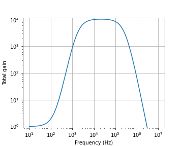
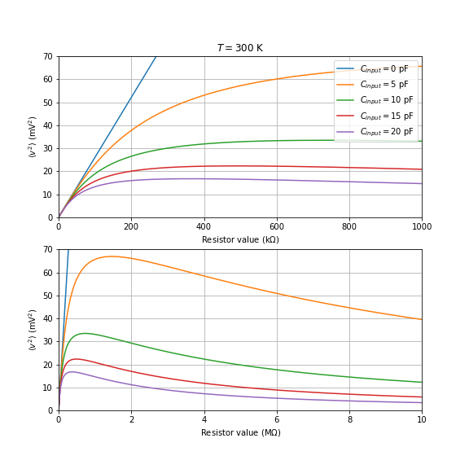
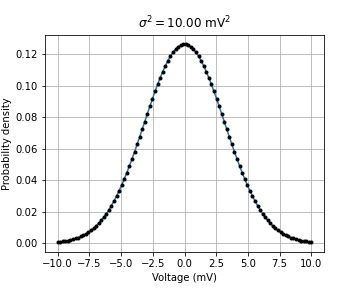

Noise in some electronic circuits
Posted on 01/09/2019Introduction
Noise is an intrinsic feature of any real world application. Not everything works as we would like in the ideal world, and some of these problems are intrinsic from nature and cannot be avoided whatsoever. Below we will consider some sources of noise and how to identify them. Since the focus here is on electronic noise, we will start with thermal noise in resistors (Johnson-Nyquist noise). Later we will consider the shot noise in photodiodes, which are an important feature in several optical detection systems.
Thermal noise in resistors
Above 0 Kelvin the conduction electrons have some motion due to the thermal energy. How to consider this? Let’s consider a simple circuit composed of two identical resistors \(R_1\) and \(R_2\) as in the circuit (a) below. It’s assumed that both conductors are in thermal equilibrium at a temperature \(T\). We consider that the thermal motion of the electrons in \(R_1\) produce some voltage noise \(v_n\) and induce some current \(i_n\) in the circuit. Our task is to relate the thermal motion with the circuit parameters. We will follow a reasoning similar to that developed by Nyquist1.

It’s easy to verify from circuit (b) that \(v_n = (R_1 + R_2) i_n\). Since \(i_n\) is the current across the circuit, Ohm’s law states that the voltage drop across \(R_2\) is \(v_2 = R_2 i_n = \frac{R_2}{R_1 + R_2} v_n\) and therefore in terms of \(v_n\) the power dissipated at \(R_2\) is \(P_2=v_2 i_n = \frac{R_2}{(R_1+R_2)^2} v_n^2.\) Now consider the particular case where \(R_1 = R_2 = R\), the power dissipated by the resistor \(R_2\) alone is \[P_2=\frac{v_n^2(t)}{4R},\] as if the thermally induced electron motion effectively sees the circuit shown in (c).
The symmetry between \(R_1\) and \(R_2\) when \(R_1=R_2=R\) and the thermal equilibrium between both resistors requires that the power given by \(R_1\) and absorbed by \(R_2\) must be exactly the same as the power given by \(R_2\) and absorbed by \(R_1\). Let’s consider the voltage noise, \(v_n\), as depicted in (a). In classical statistical mechanics the equipartition theorem states that there is \(kT/2\) of thermal energy for each degree of freedom of a system. \(k\) is Boltzmann constant and \(T\) is the temperature. Since both the electric and the magnetic fields induced in the circuit can store energy2, we can state that there is an average energy of \(kT\) in each degree of freedom. How many degrees of freedom our system has? It is possible to consider that \(v_n\) has several allowed frequencies and each frequency mode has \(kT\) energy on average. An arbitrary \(v_n\) can be expressed through the following Fourier expansion \[ v_n(t) = \int_0^\infty \tilde{v}_n(\omega) e^{j \omega t} d\omega + c.c., \] where c.c. indicates the complex conjugate of the first term. Also, \(\tilde{v}_n(0)=0\), since the constant current term must be zero. The average electric power per unit time due to the thermal motion can be expressed as \[ \left<P\right> = \left< \frac{v_n^2(t)}{4R} \right> = \int_0^\infty \frac{1}{4R} |\tilde{v}_n(f)|^2 df, \] where Parseval’s theorem can be used to obtain the last equality.
As previously stated, each mode at a frequency \(f\) is an independent degree of freedom of the system, such that the equipartition theorem states that each mode has an energy density of \(kT\). Therefore, the thermal power within a frequency band \(df\) is \(kT \,df\), or \[ |\tilde{v}_n(f)|^2 df = 4 k T R df. \]
The resistor thermal noise current \(i_n = v_n/R\) and can be obtained from the thermal noise voltage. Then \[ |\tilde{i}_n(f)|^2 df = \frac{4 k T}{R} df. \]
Since the square of the RMS current and voltage can be found after the integration of either \(|\tilde{i}_n(f)|^2 df\) or \(|\tilde{v}_n(f)|^2 df\) over the signal frequency range \(\Delta f\), and the terms in the RHS of the above expressions are independent of frequency, it is possible to state that the RMS current and voltage due to the noise must satisfy \(i_{n,RMS}=\sqrt{\frac{4kT}{R}\Delta f}\) and \(v_{n,RMS}=\sqrt{4kTR \Delta f}\). Which values are typical for these quantities? \(k=1.38\cdot10^{-23}\) \(J/K\) while at room temperature, \(T=300\) K, such that \(4kT\approx 0.1\) \(eV\). Therefore, a \(1\) k resistor in a circuit whose bandwidth is \(\Delta f=10\) kHz has an RMS voltage noise of 400 nV, and a current noise of 400 pA.
k = 1.380649E-23 # Boltzmann constant
T = 300 # Temperature in Kelvin
R = 1E3 # Resistor value
BW = 10E3 # Signal bandwidth
print('vn:', sqrt(4 * k * T * R * BW))
print('in:', sqrt(4 * k * T/R * BW))vn: 4.070354775692163e-07
in: 4.070354775692163e-10This noise is intrinsic to a condutor at a given temperature, and is not a mistake that can be avoided. Notice that the voltage noise increases with temperature, bandwidth and resistance, while the current noise decreases for larger resistances. If we want to see this effect in action, we now know which parameters must be tuned. Suppose that the ambient temperature remains, but the resistor value is increased to \(100\) k. Then the voltage noise increases to \(4\,\mu\)V and the current noise decreases to \(40\) pA. While this voltage may still seem very small, it can affect significantly the performance of high-gain voltage amplifier stages. If a total voltage gain of 1000 is applied, this noise source alone may corresponds to a significant fraction of the signal. In particular, if we consider an oscilloscope whose input resistance is \(5\) M\(\Omega\) and whose detection bandwidth is \(20\) MHz, then \(v_{n,RMS}=1\) mV and this noise can be often seen directly on screen.
k = 1.380649E-23 # Boltzmann constant
T = 300 # Temperature in Kelvin
R = 100E3 # Resistor value
BW = 100E3 # Signal bandwidth
print('vn:', sqrt(4 * k * T * R * BW))
print('in:', sqrt(4 * k * T/R * BW))vn: 1.2871591976131003e-05
in: 1.2871591976131002e-10Circuit design
Let’s put these numbers together to design a circuit that is able make this noise measurable when using a 1 k resistor and a 300 kHz detection bandwidth. We want to measure the voltage noise, or \(v_{n,RMS}=2\,\mu\)V. To observe such a small voltage in a typical oscilloscope it is necessary to apply a voltage gain of \(10^4\) or more. We also must be sure that other sources of noise are smaller than our noise of interest. In datasheets it is often stated the noise per bandwidth unit (noise density), which in our case would be \(v_n = 4\,nV/\sqrt{Hz}\). For example, if we want to use a jellybean opamp as the TL071 or the LF411, their typical input voltage noise density is \(v_n = 18\,nV/\sqrt{Hz}\), which in principle would limit our measurements to resistors of 20k and up. As a side note, we remark that the opamp LT1024 used in Eur. J. Phys. 31 (2010) 675–679 has a typical input noise voltage of 14 \(nV/\sqrt{Hz}\), and they reported satisfactory measurements with \(R\) values as low as 2k. Therefore even though low resistor could pose a problem, we could try to use simple op-amps. Let us consider the upper resistor value as 1M, where the voltage noise becomes \(v_{n,RMS}=70\,\mu\)V and \(v_n = 130\,nV/\sqrt{Hz}\). While in the upper limit it seems that measurements should be easier, we must be careful with the bandwidth: the 3dB frequency with an effective 1 pF capacitor already spoils the bandwidth. An effective capacitance of 5 pF does not significantly attenuate the signal for a 100 k resistor, but then the range of \(R\) values available for experimenting becomes smaller.
k = 1.380649E-23 # Boltzmann constant
T = 300 # Temperature in Kelvin
R = 1E3 # Resistor value
BW = 200E3 # Signal bandwidth
print('vn:', sqrt(4 * k * T * R * BW))
print('vn/sqrt(Hz):', sqrt(4 * k * T * R))
print('c_in(max):', 1/(2*pi*R*BW))
print('in:', sqrt(4 * k * T/R * BW))vn: 1.820317994197717e-06
vn/sqrt(Hz): 4.070354775692163e-09
c_in(max): 7.957747154594768e-10
in: 1.820317994197717e-09We have however to be slightly more careful in our analysis. This is because the amplification stage input has some input capacitance. Therefore, the voltage at the non-inverting op amp input is \[v_{in} = \frac{1}{1+j \omega R C_{input}} v_n.\] Also, we have to consider the detailed behavior of the op amp, since it’s amplification at high frequencies will be limited by the op amp response. We will consider in particular that the op amp bandwidth has a single pole response, such that the open loop gain can be expressed as \(A/(1+j \omega/\omega_0)\). However, instead of using \(\omega_0\), it is more interesting to express the open loop gain in terms of the unity gain bandwidth product frequency, \(\omega_{GBP}\), where \(\vert A/(1+j \omega_{GBP}/\omega_0) \vert = 1\). \(\omega_{GBP}\gg \omega_0\), such that \(\omega_0\approx \omega_{GBP}/A\), and the op amp open loop gain can be expressed as \(A/(1+j A \omega /\omega_{GBP})\). Since \(A\) is large, the op amp action over the inputs can be represented as \[V_{out} = \frac{A}{1+j A \omega /\omega_{GBP}} (v_+ - v_-) \approx j \frac{\omega_{GBP}}{\omega} (v_+ - v_-).\]
Stating that \(v_- = v_+ - j \frac{\omega}{\omega{GBP}} V_{out}\) in the op amp’s response for a non-inverting amplifier whose gain for an ideal op amp is \(G\), it can be seen that \[V_{out} = \frac{G}{1 + j \frac{\omega}{\omega_{GBP}} G} v_{in}.\] In other words, an increased gain reduces the bandwidth. Instead of setting all of the gain in a single stage and limit the circuit’s bandwidth, which is deleterious for the present experiment, we may consider \(n\) identical amplification stages in sequence, such the total response is \[V_{out} = g(\omega) v_{in} = \left(\frac{G}{1 + j \frac{\omega}{\omega_{GBP}} G}\right)^n v_{in}.\]
Below we consider the bandwidth of a non-inverting amplifier where \(\omega_{GBP}=3\) MHz. The resistors are \(1\)k and \(9.1\)k. We add a capacitor \(C=100\) n to reduce the DC gain to 1. The total response of 4 amplifier stages in sequence can be described by the plot below. Notice that the amplification bandwidth is approximately 240 kHz.
# %%
R1 = 9.1e3
R2 = 1e3
C = 100e-9
GBP = 2*pi*3e6
n=4
f = logspace(log10(10),log10(1e7), 150)
#f = linspace(0, 1e7, 100000)
omega = 2*pi*f
G = (1 + 1j * omega * (R1 + R2) * C)/(1 + 1j * omega * R2 * C)
single_stage_response = G/(1+1j * (omega / GBP) * G)
full_response = abs(single_stage_response**n)
if 0: #Evaluate bandwidth? Considering a brick-wall response
df = f[1]- f[0]
effBW = sum(full_response * df) / 10**n
print("Effective bandwidth = ", effBW/1e3," kHz")
loglog(f, full_response)
#loglog(f, rad2deg(unwrap(angle(single_stage_response**4))))
xlabel('Frequency (Hz)')
ylabel('Total gain')
ylim(0.9, 12000)
grid()
savefig("assets/johnson_noise_opamp_response_design.png")
# %%
Therefore, to relate the output RMS voltage with the resistor’s Johnson noise voltage, it is necessary to consider the total amplifier gain in terms of frequency, \(g(\omega)\). It must be later characterized experimentally, but for now we will include it in the model. Remembering that the op amp input has a capacitance \(C_{input}\), the voltage measured for a resistor \(R\) is \[V_{meas} = \frac{g(\omega)}{1 + j \omega R C_{input} } v_n.\]
Since we don’t know \(v_n\), only \(\vert v_n \vert^2\), we can consider the voltage variance from \[\left<v^2\right> = \int_0^\infty |\tilde{V}_{meas}(f)|^2 df = 4 k T R \int_0^\infty \frac{\vert g(2\pi f)\vert^2}{1 + (2\pi f R C_{input})^2 } df\]
Notice that the voltage variance must grow linearly with the resistor temperature. Also, as long as \(1/2\pi RC_{input}\) is much larger than the frequencies within the amplifier bandwidth, \(\left<v^2\right>\) is proportional to \(R\) and \(k\). Notice therefore that a determination of the amplifier response and the resistor’s resistance and temperature allows to determine Boltzmann constant. In particular, let’s consider below the expected response for some resistors. The notice how the op amp input capacitance limits the maximum voltage and how does it reduces the measured noise at large resistor values. However, this value can be determined by measuring the voltage fluctuations due to the thermal motion in M\(\Omega\) resistors. In terms of linearity, the measured behavior becomes very close to the ideal response when \(R<100\) k\(\Omega\). While this simplifies the fitting, the signal amplitude is significantly reduced.
# %%
R1 = 9.1e3
R2 = 1e3
C = 100e-9
GBP = 2*pi*3e6
n=4
k = 1.380649E-23 # Boltzmann constant
T = 300 # Temperature in Kelvin
f = linspace(0, 3e6, 30000)
df = f[1] - f[0]
omega = 2*pi*f
G = (1 + 1j * omega * (R1 + R2) * C)/(1 + 1j * omega * R2 * C)
g = (G/(1+1j * (omega / GBP) * G))**n
plt.rcParams["figure.figsize"] = (8,8)
figs, axs = plt.subplots(2,1)
R_values = logspace(log(1), log10(10e6), 1000)
#R_values = linspace(1000, 1e6, 100)
for ci in linspace(0, 20, 5): # Check the effect of varying C_input
voltage_variance = array([4 * k * T * R * sum( abs(g)**2 / (1 + (2*pi*f*R*ci*1e-12)**2) * df) for R in R_values])
axs[0].plot(R_values/1e3, voltage_variance/1e-3, label="$C_{input}=%d$ pF" % ci)
axs[1].plot(R_values/1e6, voltage_variance/1e-3, label="$C_{input}=%d$ pF" % ci)
axs[0].set_title(r"$T=%d$ K" % T)
axs[0].set_xlim(0, 1e3)
axs[0].set_xlabel('Resistor value (k$\\Omega$)')
axs[0].legend(loc=0)
axs[1].set_xlim(0, 10)
axs[1].set_xlabel('Resistor value (M$\\Omega$)')
for ax in axs:
ax.set_ylim(0, 70)
ax.set_ylabel(r'$\left<v^2\right>$ (mV$^2$)')
ax.grid()
savefig("assets/johnson_noise_expected_voltage_var.png")
plt.rcParams["figure.figsize"] = (5,4)
# %%
Another relevant consideration is that the signal should be normally distributed around the zero mean. If the measured voltage values have a variance of 10 mV\(^2\) (\(R\approx 40\) k\(\Omega\), \(C_{input}<10\) pF), the measured voltage values should have a distribution according to the plot below. Notice that this signal should be detectable in any oscilloscope with 5 mV/div sensitivity scale. At the 5 mV scale an 8 bit oscilloscope should have a voltage resolution of about 0.1-0.2 mV. The signal variance should be observable even if the bandwidth is reduced by a factor of 10, since \(\left<v^2\right>\) is proportional to the bandwidth. Assuming the validity of the above parameters, it should be possible to measure the Johnson noise from resistors having just a few k\(\Omega\). One could try to measure this with an Arduino, and here follows some comments. The 8-bit Arduinos (Uno, Nano, Mega) have 10 bit ADCs that may achieve a 1 mV resolution. While this may seem reasonable, the detection bandwidth is significantly reduced with respect to an oscilloscope. The sampling time in 8-bit arduinos may reach 4/16 MHz, or the equivalent sampling bandwidth is \(16/(2\cdot 4)=2\) MHz. But this reduces the resolution to 8-bits, or \(1.1/256=4\) mV. To reach the full 10-bit resolution the ADC sampling time (1/ADC clock frequency) must be smaller than 200 kHz, which gives a maximum bandwidth (Nyquist) of 200 kHz/2 = 100 kHz. This means that to measure the Johnson signal with an 8-bit Arduino it should be necessary to amplify the signal even further: a factor of 10 to compensate the coarser voltage resolution and another factor of 2 to compensate for the reduced bandwidth. The 32-bit Arduino Due has a 12-bit resolution ADC with a maximum voltage of 3.3V, or \(3.3/2^12=0.8\) mV resolution, and it’s able to sample signals at 1/1 MHz, which gives a theoretical 500 kHz bandwidth. Therefore, it should be easier to measure the Johnson noise with an Arduino Due, but some additional amplification stage with a gain around 8-10 would be helpful to make the signal clearer.
# %%
sigma = sqrt(10.0)
v = linspace(-10,10,100)
prob_dens = exp(-0.5*(v/sigma)**2) / (sqrt(2*pi*sigma**2))
plot(v, prob_dens)
# Assuming a 0.15 mV resolution to see how many points will be seen in the oscilloscope
oscilloscope_resolution = 0.2 # mV
v = linspace(v.min(),v.max(),round((v.max()-v.min())/oscilloscope_resolution))
prob_dens = exp(-0.5*(v/sigma)**2) / (sqrt(2*pi*sigma**2))
plot(v, prob_dens, 'k.')
grid()
title('$\\sigma^2=%.2f$ mV$^2$' % sigma**2)
ylabel('Probability density')
xlabel('Voltage (mV)')
savefig("assets/johnson_noise_probab_distribution.png")
# %%
First attempt
Since we would like to make the present experiment dirt-cheap, a first attempt will be to use the TL074 quad op amp to provide the necessary gain. We will follow an approach similar to the one discussed in Eur. J. Phys. 31 (2010) 675–679. However, a problem of the TL074 op amps respective to the usage of the LT1024 as in the paper is that the TL074 has a large input offset voltage of 9 mV (worst case), while the LT1024 has just 100 \(\mu\)V of offset voltage. The amplification of TL074 offset by a total gain of \(10^4\) becomes an unacceptably large error of 90 V. What if we change the gain in each stage such that we do not amplify the offset? That could be performed on a non-inverter amplifier which has a resistor in series with a capacitor in the feedback loop. Each gain stage becomes a buffer at DC while applies a gain of 10 at large frequencies.
Nyquist, H. (1928). “Thermal Agitation of Electric Charge in Conductors”. Physical Review. 32 (110): 110–113.↩︎
For example, a current in a conductor is induced by an electric field, while the flow of charges induces a magnetic field.↩︎